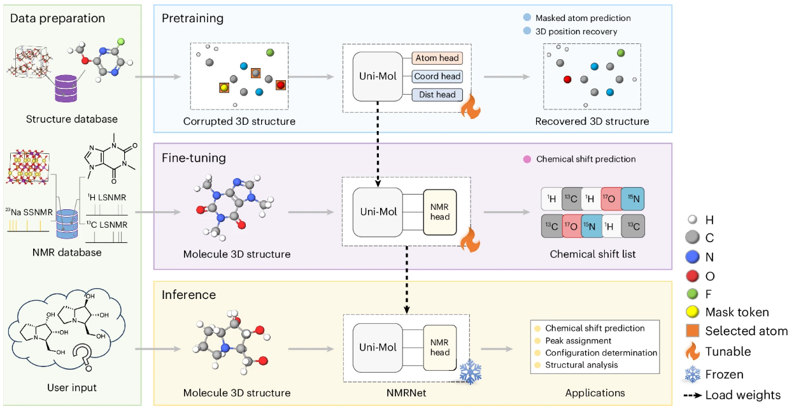
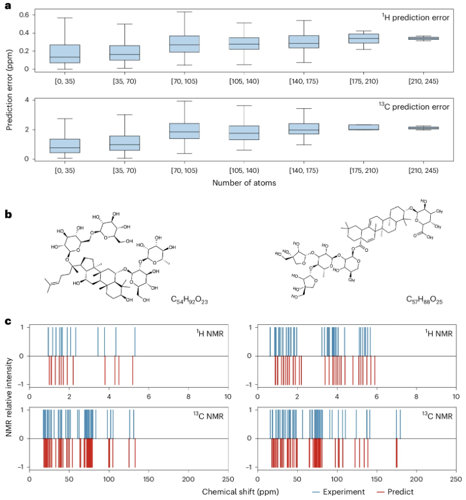

核磁共振（NMR）光谱是现代化学和材料科学不可或缺的分析工具，它能揭示分子的结构与动态行为，为科学家提供关键的结构信息。然而，准确预测NMR化学位移一直是科学界面临的挑战，尤其是当面对复杂分子结构时。近日，厦门大学研究人员推出了一个名为NMRNet的深度学习框架，为NMR化学位移预测带来了新的可能。
摘要：研究结构-光谱关系对于光谱解释至关重要，影响着结构解析和材料设计。由于它们之间复杂的关系，从分子结构预测光谱具有挑战性。在这里，我们介绍了 NMRNet，这是一个使用 SE(3) Transformer 进行原子环境建模的深度学习框架，遵循预训练和微调范式。为了支持核磁共振化学位移预测模型的评估，我们基于先前的研究和数据库建立了一个全面的基准，涵盖了多种化学系统。将 NMRNet 应用于这些基准数据集，我们在液态和固态核磁共振数据集上均取得了有竞争力的性能，证明了其在实际场景中的鲁棒性和实用性。我们的工作有助于推进深度学习在分析和结构化学中的应用。
从传统挑战到深度学习解决方案
传统的NMR化学位移预测方法往往面临准确性与效率的平衡问题。在液态NMR领域，研究人员已开发了基于图卷积网络和等变消息传递神经网络的机器学习模型，这些模型利用公共数据集如nmrshiftdb2和QM9-NMR，显示出比传统方法更高的准确性。而在固态NMR领域，如ShiftML和NN-NMR等机器学习模型通过利用基于密度泛函理论(DFT)的计算数据集，也展现了效率与精度的优势。
然而，现有框架通常只针对液态或固态NMR，限制了其普适性。NMRNet通过预训练和微调的范式，利用共享的SE(3) Transformer架构有效地模拟了液态和固态系统的原子环境，弥补了这一差距。
NMRNet：统一预测框架的创新之处
NMRNet框架包含四个核心模块：数据准备、预训练、微调和推理。该框架利用来自 Uni-Mol 的 SE(3) Transformer 架构，将原子级表示适应于液体、固体和气体状态。

左：数据准备，提供结构和 NMR 数据。 LSNMR，液态核磁共振；SSNMR，固态核磁共振。 右上：预训练，使用纯结构信息进行自我监督任务，包括屏蔽原子预测和三维位置恢复。 Coord，坐标；Dist，距离。 右中：微调，用于监督核磁共振化学位移预测。 右下：推理，微调后的 NMRNet 模型参数被冻结并应用于各种任务。
技术亮点：SE(3) Transformer架构的应用 SE(3) Transformer架构是NMRNet成功的关键。它保持了三维空间中的旋转和平移不变性，这对于准确表示分子和晶体中的原子环境至关重要。通过自监督学习任务（掩码原子预测和三维位置恢复），模型能够捕捉原子间相互作用的本质，为后续的化学位移预测奠定基础。
在数据准备阶段，研究人员使用RDKit、ASE和pymatgen等工具从各种分子源提取三维信息。对于液态NMR，使用单个分子结构；对于固态NMR，则采用周期性边界条件，设定6Å的截断半径来定义原子环境。
预训练阶段是NMRNet的关键创新点。研究人员收集了超过480万个结构进行大规模预训练，通过掩码原子类型预测和三维坐标重建等自监督任务，学习原子环境表示。为解决数据集中不同元素局部结构数量严重不平衡的问题，研究人员实施了对数加权重采样方法。【预训练在8个 80 GB NVIDIA A100 上进行】
创新点：对数加权重采样策略 在处理原子环境数据时，研究人员面临一个关键挑战：数据集中不同元素的分布极度不平衡。例如，在经过处理的CSD数据集中，仅H和C元素的局部结构就占总数的84%以上。为解决这一问题，研究者采用了对数加权重采样方法，使得模型能够更有效地学习各种局部结构的化学环境，包括那些较少见元素的局部结构。
微调阶段，NMRNet支持元素特定和多元素预测，从而实现了更精确的结构解析，网络在 nmrshiftdb2-2018 数据集（原子数最大为 64）上进行了微调。研究人员还创建了nmrshiftdb2-2024数据集作为测试集，并且通过手动筛选和纠正提高了可靠性。相比于nmrshiftdb2-2018，该数据集包含更多原子、更广泛的元素和更复杂的结构。【微调在1个32GB NVIDIA V100 上进行】
性能评估：从液态到固态的优异表现
在液态NMR预测方面，NMRNet对1H的预测误差(MAE)为0.181 ppm，对13C的预测误差为1.098 ppm，这些误差接近先前报道的内在实验误差。即使对于代表量较少的元素如11B、15N和17O，模型也表现出良好的预测能力（R²>0.85）。
预训练的优势在实验中得到了清晰的证明：与未预训练的模型相比，预训练显著降低了预测误差。值得注意的是，即使在小规模训练集上，预训练模型也能保持良好性能，这强调了在微调数据有限时利用大规模自监督预训练的好处。
与现有方法相比，NMRNet在nmrshiftdb2-2018和QM9-NMR数据集上都取得了突破性进展。在QM9-NMR上，1H的MAE从0.054 ppm改进到0.020 ppm，13C的MAE从0.520 ppm改进到0.262 ppm。
对于固态NMR，研究人员测试了四种策略来增强模型对固态NMR的理解，最终采用截断半径设置策略在ShiftML1和ShiftML2数据集上获得最佳结果。特别是对P2型阴极材料23Na化学位移的预测，RMSE从之前研究的125 ppm大幅降低到48 ppm。

a, 测试集上的预测误差，来自 2018 年的 nmrshiftdb2（分子中原子数≤64）以及来自 nmrshiftdb2-2024 的额外测试集（分子中原子数≥70），按分子中原子数分组。样本代表具有标记化学位移的单独原子；每个数据点对应于预测值和实际值之间的绝对误差。顶部图显示了 (1) H 误差，样本大小（n）：1572，980，1218，191，70，29 和 2（从左到右）。底部： (13) C 误差，n：4273，1105，760，114，62，7 和 2（从左到右）。所有箱线图显示中位数（中心线）和 25th–75th 百分位数范围（箱），以及触须延伸到箱边缘 1.5 倍的四分位距内的最小和最大值。b，两个分子以展示 NMRNet 的性能。左：Yesanchinoside E（C (54) H (92) O (23) ，nmrshiftdb2 ID：20173355）。右：chiococcasaponin I（C (57) H (88) O (25) ，nmrshiftdb2 ID：20253108）。c，b 中两个分子的预测（红色）和实验（蓝色）化学位移的比较。 (1) H NMR（顶部）和 (13) C NMR（底部）。所有峰强度均归一化到 1。
实际应用：从神经毒剂到复杂分子的精确预测
NMRNet的实用价值在多个挑战性任务中得到了验证。首先，对五种神经毒剂的化学位移预测精度与密度泛函理论(DFT)方法相当，且无需任何先验知识或额外计算要求。
实用价值：超大分子预测能力 NMRNet展示了令人印象深刻的泛化能力，尤其是对大分子的预测。即使模型在较小分子（≤64原子）上训练，也能准确预测含有超过150个原子的复杂分子的NMR谱图。这表明模型真正掌握了化学位移与原子局部环境之间的本质关系，而非简单地记忆训练数据中的模式。
关键突破：构型确定与立体化学识别 NMRNet在构型确定方面展现了独特优势，特别是在手性异构体识别中。通过整合三维分子表示，模型能够区分具有几乎相同化学环境的异构体。例如，对于hyacinthacines（这种化合物有八种可能的异构体：七种已合成，一种尚未合成），使用13C预测化学位移正确分配了8个中的5个。这种能力对于药物开发和复杂天然产物研究具有重要意义。
尽管NMRNet在各种任务中表现出色，但仍存在一些局限性和挑战。应用于非常复杂或高度特定系统时，模型性能可能会有所波动；对可用数据集的依赖也可能限制其在数据稀缺情况下的适用性。
未来工作应当着眼于整合更多实验因素，如溶剂和温度，以提高模型的预测准确性并扩展其在更广泛化学环境中的应用。
结语
随着数据质量的提高和算法的不断优化，我们有理由期待深度学习在NMR分析中的应用将继续发展。这不仅将提高结构鉴定的准确性和效率，也将为材料设计和药物开发等领域提供更可靠的计算工具。
论文：Toward a unified benchmark and framework for deep learning-based prediction of nuclear magnetic resonance chemical shifts
链接：https://www.nature.com/articles/s43588-025-00783-z